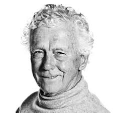

Mesterklasse med Toralv Maurstad - VENTELISTE
- Kategori:
- Kurs for viderekomne med åpning for andre
Kurs for viderekomne med åpning for andre
Åpent for profesjonelle skuespillere med en viss erfaring, men ikke fullt så strenge krav som våre helt røde kurs. Noen års erfaring etter ferdig utdanning er påkrevet. Se søknadsteksten for spesifikasjoner. - Dato:
- 01.09.2014 til 01.09.2014
- Start kl :
- 11:00
- Slutt kl :
- 16:00
- Pris:
- 400,-
- Adresse:
- Norsk Skuespillersenter, Welhavensgate 1, Oslo
 Mesterklasse med Toralv Maurstad
{kind=link}
I denne mesterklassen deler Maurstad av sin lange erfaring som skuespiller og regissør, gjennom diskusjon og praktisk arbeid på gulvet med et knippe scener.
Påmelding
Kurset er forbeholdt skuespillere med en viss erfaring. (Ikke nyutdannede.) Send CV ved påmelding.
Om Toralv Maurstad
Toralv Maurstad (født 24. november 1926 i Bærum) er en norsk skuespiller, instruktør og tidligere teatersjef. Maurstad har teaterutdannelse fra Royal Academy of Dramatic Art i London (1947–49).
Han hadde sin debut i 1949 ved Trøndelag Teater. I 1951 flyttet han til Oslo og Det Nye Teater. Samme år hadde han sin første store filmrolle, i Kranes konditori. Fra 1954 var Maurstad ansatt ved Nationaltheatret, der han gjorde en solid innsats i en rekke komedier og i samtidsdramatikk som Joe Osbornes Se deg om i vrede. I 1963 fikk han Kritikerprisen.
Han er også blitt kjent for flere klassikertolkninger, som Puck i Shakespeares En midtsommernattsdrøm og tittelrollene i Erasmus Montanus, Peer Gynt og Brand. Legendarisk er et gjestespill ved Det norske Teatret i 1961, der han spilte mot foreldrene i Lang dags ferd mot natt av Eugene O'Neill. Maurstad var sjef ved Oslo Nye Teater i ti år fra 1967 og ved Nationaltheatret fra 1978 til 1986.
Han mottok Heddaprisen i 2005, Anders Jahres kulturpris i 2006 og Leif Justers ærespris i 2008. I mars 2007 ble Maurstad utnevnt til kommandør av St. Olavs Orden.
Pris for medlemmer av NSF: 350,-
Kurset arrangeres i samarbeid med Skuespiller- og danseralliansen.